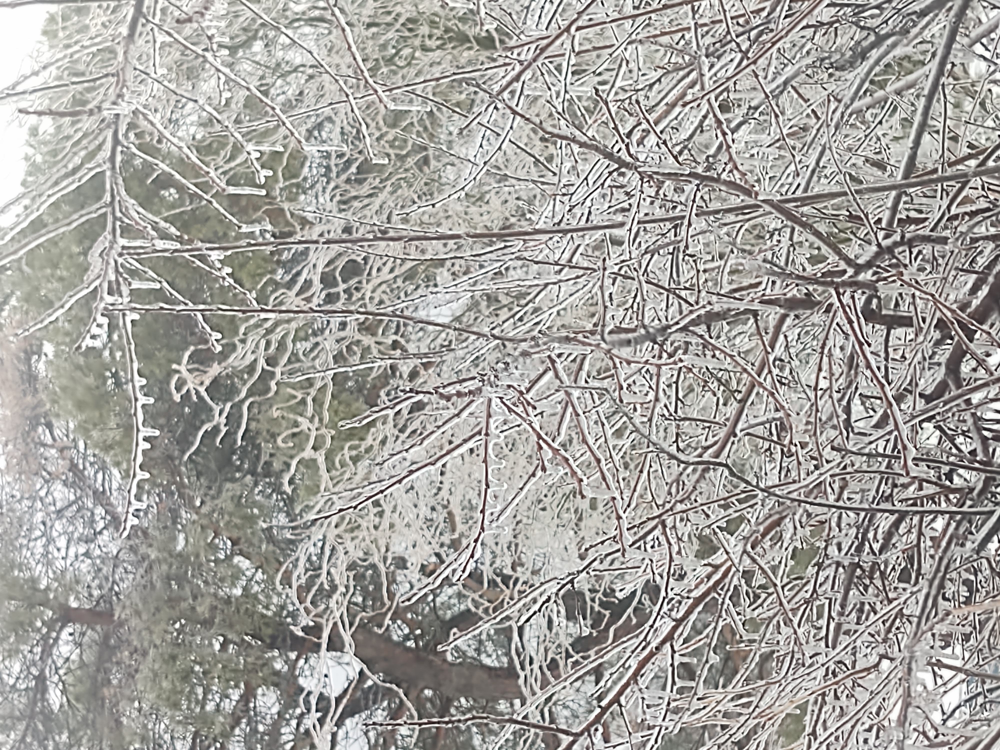
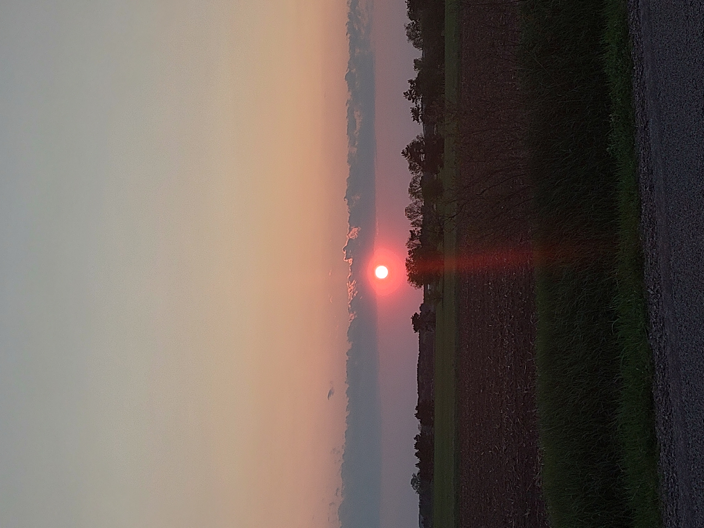
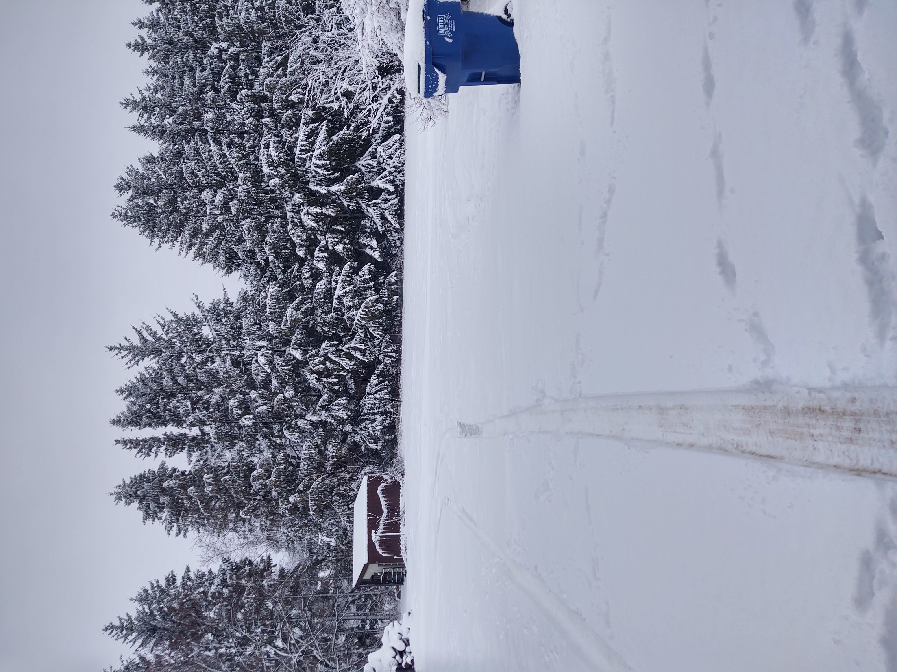
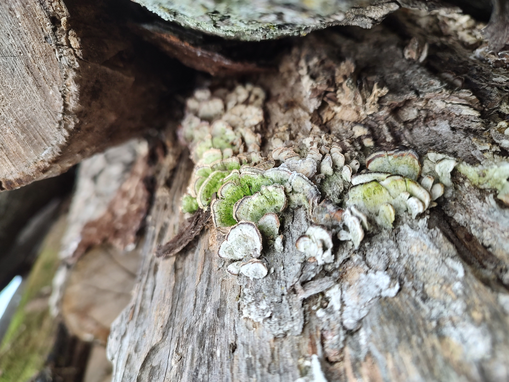

Nature
Nature's canvas adorned with mystical hues: mushrooms thriving on a rustic log 🍄💜

Ice Accumulation
Frosty fingers of winter delicately sculpting nature's beauty onto these branches ❄️

Sunset
Golden hour hues painting the sky as the pink sun bids farewell to the farm fields below 🌅💖

Spring Melt
Melting snow dances down the stream, a tranquil symphony of spring's awakening ❄️💧

Wolf Lake Beach
A serene day by the sandy shores, where laughter meets the gentle lull of the lake waves. 🏖️☀️

Solitude in Snow: A Blue Bin's Winter Watch
Even amidst the winter's beauty, a lone sentinel stands, reminding us to keep our surroundings pristine. ❄️🗑️

Zesty Zing
These whimsical fungi add a pop of color and a dash of fun, proving that even mushrooms have a sense of humor! 🍄🧡

Nature's Miniature Wonderland
A tapestry of life unfolds as moss delicately blankets mushrooms sprouting from a humble log, showcasing the intricate beauty in decay. 🌿🍄